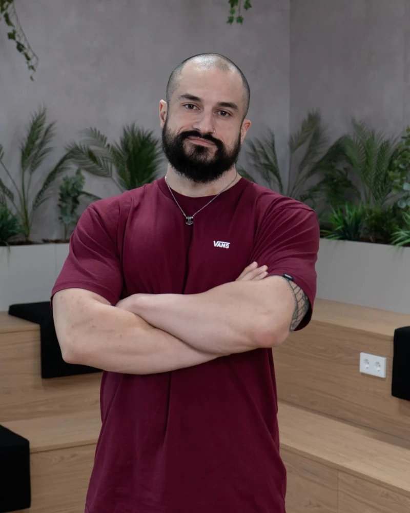

Sobre mí.
Soy Jon Ander, product designer. Empecé en diseño gráfico en 2015 y diseño productos digitales desde 2020, casi siempre B2B: pagos, una startup que pivotó varias veces, riesgo de terceros y ahora software de RR. HH. en Factorial.
Fuera del trabajo me encontrarás en un viaje largo con mi Harley, o perdido en un mundo de fantasía, casi siempre un MMO. Llevo años haciendo CrossFit. Pregúntame por cualquiera de las tres cosas y hablaré durante horas.

Dónde he trabajado
- FactorialFeb 2026 – ahora · Product designer
- RiskallayMay 2024 – Feb 2026 · Product designer
- KokonoEne 2022 – Feb 2024 · Product designer
- RedsysEne 2020 – Dic 2021 · Diseñador UX/UI
- Antes2015 – 2019 · Diseño gráfico y web, ilustración